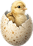

<!DOCTYPE html>
<html lang="nl">

<head>
    <meta charset="UTF-8">
    <meta name="viewport" content="width=device-width, initial-scale=1.0">
    <title>BvA-Kaart van Amsterdam en Amstelland</title>
    <link rel="stylesheet" href="style-kaart.css">
</head>

<body>
    <header>
        
        
    </header>
    <main>
        <nav class="side-navbar">
            <div class="nav-top">
                
            </div>

            <div class="nav-bottom">
                
                
                
            </div>
        </nav>
        <canvas id="mapCanvas"></canvas>
    </main>
    <footer>
        <a href="bijdrage.html" class="doneer-flap">Doneer</a>
    </footer>

    <aside class="filter-menu-overlay" id="filterOverlay">
        <div class="filter-menu-container">

            <div class="filter-menu-header">
                <h2>Ontdek Amstelgebied</h2>
                <button class="filter-close-btn" id="closeMenuBtn" aria-label="Sluiten">&times;</button>
            </div>

            <div class="filter-options-list">

                <div class="filter-option-item">
                    <div class="filter-icon-shape">
                        
                    </div>
                    <div class="filter-item-text">
                        <h3>Boerderijen</h3>
                        <p>Ontdek de boeren achter Boeren van Amstel.</p>
                    </div>
                    <label class="filter-custom-checkbox">
                        <input type="checkbox" id="filterBoerderijen" checked>
                        <span class="filter-checkmark"></span>
                    </label>
                </div>

                <div class="filter-option-item">
                    <div class="filter-icon-shape">
                        
                    </div>
                    <div class="filter-item-text">
                        <h3>Weidevogelgebieden</h3>
                        <p>Ontdek waar de weidevogels wonen.</p>
                    </div>
                    <label class="filter-custom-checkbox">
                        <input type="checkbox" id="filterWeidevogels" checked>
                        <span class="filter-checkmark"></span>
                    </label>
                </div>

                <div class="filter-option-item">
                    <div class="filter-icon-shape">
                        
                    </div>
                    <div class="filter-item-text">
                        <h3>Horeca & Partners</h3>
                        <p><span class="switchText">Switch naar Boer perspectief</span> om te zien welke bedrijven die
                            bijdragen aan natuurherstel.</p>
                    </div>
                    <label class="filter-custom-checkbox">
                        <input type="checkbox" disabled>
                        <span class="filter-checkmark"></span>
                    </label>
                </div>

                <div class="filter-option-item">
                    <div class="filter-icon-shape">
                        
                    </div>
                    <div class="filter-item-text">
                        <h3>Verkooppunten</h3>
                        <p><span class="switchText">Switch naar Boer perspectief</span> om verkooppunten te zien</p>
                    </div>
                    <label class="filter-custom-checkbox">
                        <input type="checkbox" disabled>
                        <span class="filter-checkmark"></span>
                    </label>
                </div>

                <div class="filter-option-item filter-toggle-item">
                    <div class="filter-icon-shape no-bg">
                        
                    </div>
                    <div class="filter-item-text">
                        <h3>Spelmodus</h3>
                    </div>
                    <label class="filter-switch">
                        <input type="checkbox">
                        <span class="filter-slider"></span>
                    </label>
                </div>

            </div>

            <hr class="filter-menu-divider">

            <div class="filter-menu-footer">

                <div class="filter-footer-row">
                    <div class="filter-footer-text">
                        <h3>Het Grutto perspectief</h3>
                        <p>Of kies het boer perspectief</p>
                    </div>
                    
                </div>

                <div class="filter-footer-row filter-settings-row">
                    <div class="filter-setting-control">
                        <span>Geluid</span>
                        <label class="filter-switch filter-switch-small">
                            <input type="checkbox">
                            <span class="filter-slider"></span>
                        </label>
                    </div>

                    <div class="filter-setting-control">
                        <span>Taal: <strong>NL</strong></span>
                    </div>

                    <button class="filter-icon-btn" aria-label="Instellingen">
                        
                    </button>
                </div>

                <div class="filter-footer-row filter-credits-row">
                    <span class="filter-credits">Gemaakt door Mier en Krekel</span>
                    <button class="filter-icon-btn" aria-label="Informatie">
                        
                    </button>
                </div>
            </div>

        </div>
    </aside>

    <script src="kaart-grutto.js"></script>
</body>

</html>